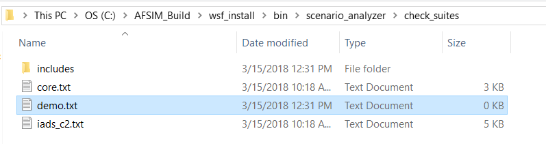
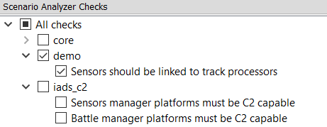
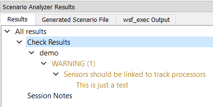
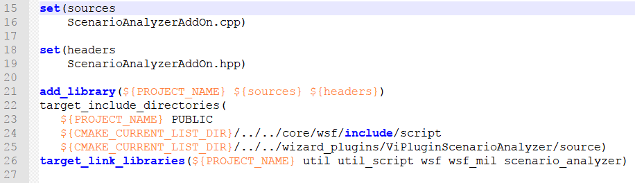
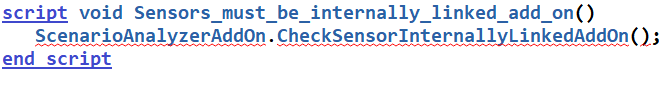

Adding New Scenario Analyzer Checks¶
This section will explain the process of adding custom Checks and SessionNotes to the Scenario Analyzer in a tutorial format. Users can define checks either by exclusively using the AFSIM scripting language or by using a combination of AFSIM script and C++. The tutorial will begin with the steps common to both methods. Then, we will add two new Checks using only AFSIM script. Next, the tutorial will demonstrate how to use a combination of AFSIM script and C++ to add a Check. Finally, we will cover the minor differences in the process for adding a SessionNote versus a Check. Because the processes are almost identical, it is safe to assume that instructions for Check files also apply to SessionNote files unless stated otherwise.
General Instructions¶
To add a new suite of Checks for use with the Scenario Analyzer, create a new text file in wsf_install/bin/scenario_analyzer/check_suites. The name of the file will be used as the name of the corresponding suite in the Scenario Analyzer Checks pane. For example, all Checks defined in a file named demo.txt will be displayed as member of the demo suite.
Check files such as demo.txt may contain a small subset of what is allowed in a normal AFSIM scenario file. The following elements are valid:
Comments
IncludeandInclude_oncestatementsA script block specifying the suite’s dependencies
Any number of script blocks following the format of a Scenario Analyzer Check.
Comments: The same comment formats accepted in a normal AFSIM scenario file are valid in a Check file. Lines beginning with # or // will be ignored, as will all text surrounded by /*…*/. Comments may appear anywhere that would be allowed in a normal AFSIM scenario file.
Include statements: If Include or Include_once statements appear, they must come at the top of the file before any script blocks. Any scripts not intended to be parsed, loaded, and run as Scenario Analyzer Checks must be defined in separate text files, which may be included in the Check file. The checks_suites and session_notes_suites directories each contain a folder named includes that is meant to hold any files containing helper scripts. As we will see later in the tutorial, scripts defined in a file named helpers.txt in the includes directory can be added to a Check file using Include_once includes/helpers.txt.
Dependencies script block: Before the Scenario Analyzer loads checks from a suite, the tool first verifies that any dependencies specified in the Check file are present. When creating a new suite of Checks, you may add a script named ScenarioAnalyzerDependencies[Suite] that takes no parameters and returns void. Any string literals inside the script block will be parsed as names of dependencies. Within the dependencies script, the string literals may either be assigned to strings or added to an array of strings. (When comparing the strings inside a dependencies block with the names of loaded plug-ins and libraries, the Scenario Analyzer will optionally prefix ‘lib’ and optionally postfix add ‘_d’, ‘.dll’, and ‘.so’ to the strings. If the string literal 'wsf_iads_c2' appears in the dependencies script, the Scenario Analyzer will determine that the dependency is present if either wsf_iads_c2_d.dll, wsf_iads_c2.dll, or libwsf_iads_c2_[lnm64].so has been registered as a plug-in, or if wsf_iads_c2 has been registered as an extension.)
script void ScenarioAnalyzerDependenciesDemo()
string dependency1 = "wsf_iads_c2";
Array<string> dependencies = Array<string>();
dependencies.PushBack(dependency1);
dependencies.PushBack("wsf_mil");
end_script
In the example, the demo suite of Checks will not be available unless the wsf_iads_c2 plug-in and the wsf_mil extension have both been registered. It is important to keep in mind that dependencies apply to an entire suite of Checks. If even one Check requires wsf_brawler.dll , that plug-in should be listed as a dependency for the suite. However, this means that the entire suite of checks will become unavailable if that plug-in is missing. The best option may be to separate Checks into suites based on shared dependencies.
Scenario Analyzer Check script blocks: Like the dependencies script block, all Checks must be defined in a script...end_script block that takes no arguments and has a void return type. The name given to a Check when it is defined as script is used to display that Check in the Scenario Analyzer Checks pane, but with spaces substituted for underscores. Checks generate results by calling ScenarioAnalyzerUtils.SendResultMessage(), a script method in the global context that takes four string arguments: the name of the suite, the name of the check (exactly as you want it to appear in the Results pane), the severity level of the check, and a detailed message describing why the Check has been failed.
Let’s start building our suite of Checks in demo.txt by adding the skeleton of a check that will eventually identify all sensors in a scenario that are not able to send their data, directly or indirectly, to a track processor. We will call the Check ‘Sensors should be linked to track processors,’ which is the same name given to this Check in the core suite. The name of the script must not contain white space, so we will replace the spaces with underscores.
script void ScenarioAnalyzerDependenciesDemo()
string dependency1 = "wsf_iads_c2";
Array<string> dependencies = Array<string>();
dependencies.PushBack(dependency1);
dependencies.PushBack("wsf_mil");
end_script
script void Sensors_should_be_linked_to_track_processors()
string suite = "demo";
string check = "Sensors should be linked to track processors";
string severity = "WARNING";
string message = "This is just a test";
end_script
We know the first two values for our call to ScenarioAnalyzerUtils.SendResultMessage(): 'demo' (the name of the suite), and 'Sensors should be linked to track processor' (the name of the Check). We have three options for the third argument, which represents the severity: 'ERROR', 'WARNING', and 'PASS'. Let’s choose 'WARNING' to indicate that the scenario has failed the Check, and let’s use a placeholder message for our last argument since this check isn’t doing any work yet.
Now, if we save demo.txt and click Load Checks, our Check should appear in the Scenario Analyzer Checks pane under a new suite named demo:
If we select and run just this Check, we will see the following Check Results:
We now have a Check that can be loaded, selected, and run. However, it doesn’t yet do the work that its name advertises. The steps that we have taken so far will be the same whether we choose to implement the body of the Check in purely AFSIM script or with a mix of script and C++. We will finish writing the Check in AFSIM script first, then return to this point and implement a different Check again using C++.
Adding Checks Using the AFSIM Scripting Language¶
For the purposes of this tutorial, we’ll implement a simplified version of the Sensors should be linked to track processors Check. While the actual Check handles SAR sensors differently, our version of the Check will require that every sensor in a scenario is linked to a track processor. We need to iterate over every platform in the scenario, and then iterate over every sensor on each platform. Let’s also define a Boolean variable checkPassed and initialize it to true. We’ll use this variable to keep track of whether the scenario as a whole has passed the Check:
bool checkPassed = true;
for (int i = 0; i != WsfSimulation.PlatformCount(); i += 1)
{
// For every sensor on each platform...
WsfPlatform platform = WsfSimulation.PlatformEntry(i);
for (int j = 0; j != platform.SensorCount(); j += 1)
{
WsfSensor sensor = platform.SensorEntry(j);
}
}
For every sensor that we find, we must check whether it is linked to a track processor. Our Check will define ‘linked’ to mean that the sensor either: (1) has one or more internal links connecting it to an on-platform track processor or (2) is internally linked to another type of processor, such as a WSF_LINKED_PROCESSOR, that reports to another platform. The second platform may itself have a track processor, or it may have a processor that eventually reports to a platform with a track processor. For every external link that we follow between a sensor and its linked track processor, we must make sure that: (a) the reporting processor has access to a comm that can transmit, (b) the receiving platform has a comm that can receive, (c) the two comms share a network, and (d) the receiving comm is internally linked to the receiving processor. Additionally, we are only interested in the first track processor encountered when following a chain of links, so we do not want to follow external links from track processors.
Since this type of connection relationship between platform parts comes up frequently when implementing Scenario Analyzer Checks, the Scenario Analyzer plug-in provides access to a script utility, ScenarioAnalyzerUtils.LinkedAndReachablePlatformPartsChooseProcs. This utility lets us define an origin platform part and the type name of the ‘linked and reachable’ platform parts that we are looking for. Additionally, we must provide an Array<string> of type names identifying either the kinds of processors whose external links we exclusively want to follow or the kinds of processors whose external links we want to ignore. The final argument, a Boolean value, specifies whether we want to follow (true) or ignore (false) the kinds of processors we named in the array.
For this Check, we want to treat each sensor as an origin platform part, find all ‘linked and reachable’ track processors, and excluded external links from intermediate track processors. In AFSIM script, track processors may be represented by either WSF_TRACK_PROCESSOR or WSF_TRACK_MANAGER. As a result, we will want to call the utility twice for each sensor, once looking for all connected WSF_TRACK_PROCESSORs and once looking for all connected WSF_TRACK_MANAGERs. We should add both type names to the list of processors whose external links we will ignore. Here is the resulting code:
// ... find all track processors that it can reach.
// Do NOT follow external links from WsfTrackProcessors
// (which may have a "type" of either WSF_TRACK_PROCESSOR or WSF_TRACK_MANAGER)
Array<string> ignoreExternalLinks = Array<string>();
ignoreExternalLinks.PushBack("WSF_TRACK_PROCESSOR");
ignoreExternalLinks.PushBack("WSF_TRACK_MANAGER");
// Track processors may have a "type" of either WSF_TRACK_PROCESSOR
// or WSF_TRACK_MANAGER: look for both, since a link to either is sufficient.
Array<WsfPlatformPart> linkedTrackProcs =
ScenarioAnalyzerUtils.LinkedAndReachablePlatformPartsChooseProcs(
sensor, "WSF_TRACK_PROCESSOR", ignoreExternalLinks, false);
Array<WsfPlatformPart> linkedTrackMgrs =
ScenarioAnalyzerUtils.LinkedAndReachablePlatformPartsChooseProcs(
sensor, "WSF_TRACK_MANAGER", ignoreExternalLinks, false);
A sensor will fail our Check if both calls to LinkedAndReachablePlatformPartsChooseProcs return empty arrays. When we discover a failure case, we should send a result message that describes the failure, and we should set checkPassed to false. We can also include the information that the Scenario Analyzer requires to create hyperlinks from the results messages to relevant locations in the scenario files. To log a message that also includes link data, we will use the utility ScenarioAnalyzerUtils.SendResultMessageWithLinks. In addition to the string parameters that we passed to ScenarioAnalayzerUtils.SendResultsMessage above (suite, check, severity, and message), we will also pass two Array<string> parameters: one with the ‘types’ of the scenario file locations and one with the ‘names’ of the locations. (See the utility’s description for an explanation of location types and location names.) For every sensor that fails the Check, we will embed links both to the sensor and to its platform:
// sensor fails the Check if it is not linked to any WsfTrackProcessor
if (linkedTrackProcs.Size() <= 0 && linkedTrackMgrs.Size() <= 0)
{
checkPassed = false;
Array<string> linkedLocationTypes = Array<string>();
Array<string> linkedLocationNames = Array<string>();
linkedLocationTypes.PushBack("platform");
linkedLocationNames.PushBack(platform.Name());
linkedLocationTypes.PushBack("sensors");
linkedLocationNames.PushBack(sensor.Name());
string message = "Sensor " + sensor.Name() + " on platform " +
platform.Name() + " is not linked directly or indirectly to a track processor";
ScenarioAnalyzerUtils.SendResultMessageWithLinks(suite, check, severity,
message, linkedLocationTypes, linkedLocationNames);
}
If every sensor in the scenario passed the Check, we want to inform the user that the scenario as a whole has passed. Since we used checkPassed to keep track of the scenarios pass or failure status, we can log a ‘pass’ message if that variable evaluates to true before we return from the Check:
if (checkPassed)
{
string message = "Scenario passed this check.";
ScenarioAnalyzerUtils.SendResultMessage(suite, check, "PASS", message);
}
Once we save our Check’s suite file and click the Load Checks button to refresh the available Checks, we are ready to select and run our new Check. If we run just this Check against a scenario that has one sensor that is not linked to a track processor, we get the following result:

The full code for this demo Check is in the Appendix.
Now, let’s try implementing another Check using AFSIM script that uses a helper script function defined in a separate file. As explained at the beginning of the tutorial, only scripts that conform to the format for Scenario Analyzer Checks may appear in a file in the suites directory. If you want to define a helper script, you must define the helper in a separate file located in check_suites/includes, then use include or include_once to make the helper scripts available to your Checks. To demonstrate how to use another Scenario Analyzer utility that relies on helper scripts, we will re-implement one of the Checks available in the IADS C2 suite, Sensors manager platforms must be connected to battle manager with commit authority.
In the context of IADS C2 functionality, a platform with a sensors manager is ‘connected’ to a battle manager if that battle manager appears on a platform that is superior to the sensors manager platform on the default command chain. One of the utilities for navigating command chains, ScenarioAnalyzerUtils.CheckUpOneCommandChain, allows us to specify the name of a helper script that is accessible in the global script context (at the simulation level), and invoke that script on an origin platform and all platforms superior to the origin platform on the specified command chain. The utility will stop and return true as soon as it finds a platform for which the helper script returns true. If the utility reaches the top of the specified command chain and does not find a platform for which the helper script returns true, the utility will return false. In order to be used by CheckUpOneCommandChain (or any of the other command chain-navigating utilities), the helper script must take one WsfPlatform as an argument and must return a Boolean value.
Since we have this utility at our disposal, the most direct way of implementing our Check is it iterate over each platform and check if it has a sensors manager. For each platform with a sensors manager, we can call CheckUpOneCommandChain using the sensors manager platform as our origin and specifying 'default' as the command chain to evaluate. Will we also need to pass in the name of a helper script that must take a WsfPlatform and return true if the platform has a battle manager with commit authority.
Let’s start by defining our helper script in check_suites/includes/helpers.txt:
script bool PlatformHasBMWithCommitAuthority(WsfPlatform p)
for (int i = 0, procCount = p.ProcessorCount(); i != procCount; i += 1)
{
WsfProcessor proc = p.ProcessorEntry(i);
if (proc.IsA_TypeOf("WSF_UNCLASS_BM"))
{
WsfUnclassBM bm = (WsfUnclassBM)proc;
return bm.HasCommitAuthority();
}
}
return false;
end_script
Since we are now relying on a script in helpers.txt, we must include this file at the top of our suite file before our dependencies script block:
include includes/helpers.txt
script void ScenarioAnalyzerDependenciesDemo()
string dependency1 = "wsf_iads_c2";
Array<string> dependencies = Array<string>();
dependencies.PushBack(dependency1);
dependencies.PushBack("wsf_mil");
end_script
The beginning of our Check will look very similar to the first Check we implemented, since we still need to define our suite, checkName, and severity, initialize checkPassed to true, and iterate over all of the platforms in the scenario:
script void Sensors_manager_platforms_must_be_connected_to_battle_manager_with_commit_authority_script()
string suite = "demo";
string checkName = "Sensors manager platforms must be connected to battle manager with commit authority";
string severity = "ERROR";
bool passedCheck = true;
int platCount = WsfSimulation.PlatformCount();
for (int i = 0; i != platCount; i += 1)
{
WsfPlatform platform = WsfSimulation.PlatformEntry(i);
}
end_script
For each platform, we want to iterate over its processors and determine if the platform has a sensors manager. If so, the platform will fail our Check unless it is subordinate to a platform that has a battle manager with commit authority on the default command chain. As discussed above, we can use the CheckUpOneCommandChain utility to do most of the work, and we will pass in the name of the helper script we just defined and included as a parameter. Here is what the code looks like:
WsfPlatform platform = WsfSimulation.PlatformEntry(i);
for (int j = 0, procCount = platform.ProcessorCount(); j != procCount; j += 1)
{
WsfProcessor proc = platform.ProcessorEntry(j);
if (proc.IsA_TypeOf("WSF_SENSORS_MANAGER"))
{
string scriptName = "PlatformHasBMWithCommitAuthority";
if (!ScenarioAnalyzerUtils.CheckUpOneCommandChain(platform, scriptName, "default"))
{
passedCheck = false;
string detail = "Platform " + platform->Name() + " deploys a sensors manager, but neither this platform nor any platform above it in the default command chain deploys a battle manager with commit authority.";
ScenarioAnalyzerUtils.SendResultMessage(suite, checkName, severity, detail);
}
}
}
If CheckUpOneCommandChain returns false with these parameters, the platform has failed the Check, so we send a message describing the failure and set checkPassed to false. This time, we use ScenarioAnalyzerUtils.SendResultMessage, which does not include the information needed to create hyperlinks to locations in the scenario files. As we did when implementing the first Check, we should remember to log a ‘pass’ message if all platforms pass the Check. To see the full code for this demo Check, see the Appendix.
Adding Checks Using C++¶
Implementing a Check in C++ offers the benefit of access to some AFSIM functionality that has not been exposed to the AFSIM scripting language, but the process is more complicated than defining a Check using exclusively script. To demonstrate, we will walk through the steps to re-implement the Sensors must be internally linked Check to a new suite called “AddOn.” We will do this by creating a new Mission plug-in in which we will define a new UtScriptClass and our new Check. (If you are not familiar with writing plug-ins for Mission, consult the Developer Class materials).
In the CMakeLists.txt file for your plug-in, you must list the path to ScenarioAnalyzerUtilities.hpp as one of your included directories, and you must link the scenario_analyzer library. The image below shows a section of an example CMakeLists.txt file:
The Check must still be defined within a Scenario Analyzer Check block in a suite file within the check_suites directory. We will add our Check to check_suites/add_on.txt. Instead of implementing the Check directly, the script just calls another script method, CheckSensorInternallyLinkedAddOn, which belongs to the ScenarioAnalyzerAddOn script class:
Since the script method does not exist yet, Wizard marks its name as invalid. Now, we need to register our new plug-in. The code below shows example code that can be used in ScenarioAnalyzerAddOn.cpp to handle plug-in registration:
class ScenarioAnalyzerAddOnExtension : public WsfApplicationExtension
{
public:
void AddedToApplication(WsfApplication& app) override
{
UtScriptTypes* scriptTypes = app.GetScriptTypes();
scriptTypes->Register(new ScenarioAnalyzerAddOnScriptClass(scriptTypes));
}
};
void Register_scenario_analyzer_add_on(WsfApplication& aApplication)
{
if(!aApplication.ExtensionIsRegistered("scenario_analyzer_add_on"))
{
aApplication.RegisterFeature("scenario_analyzer_add_on_plugin", "scenario_analyzer_add_on");
aApplication.RegisterExtension("scenario_analyzer_add_on", ut::make_unique<ScenarioAnalyzerAddOnExtension>());
}
}
extern "C"
{
UT_PLUGIN_EXPORT void WsfPluginVersion(UtPluginVersion& version)
{
version = UtPluginVersion(WSF_PLUGIN_API_MAJOR_VERSION, WSF_PLUGIN_API_MINOR_VERSION, WSF_PLUGIN_API_COMPILER_STRING);
}
UT_PLUGIN_EXPORT void WsfPluginSetup(WsfApplication& application)
{
WSF_REGISTER_EXTENSION(application, scenario_analyzer_add_on);
}
}
Then, we need to define a new script class, which we will use to declare the CheckSensorInternallyLinked() script method that we called in add_on.txt. Within the script class definition, we will use the UT_DECLARE_SCRIPT_METHOD macro to declare our new script method. We also add the script method to our new script class as a static method, using UtScriptMethod::AddStaticMethod().
class ScenarioAnalyzerAddOnScriptClass : public UtScriptClass
{
public:
UT_DECLARE_SCRIPT_METHOD(CheckSensorInternallyLinkedAddOn);
explicit ScenarioAnalyzerAddOnScriptClass(UtScriptTypes* types)
: UtScriptClass("ScenarioAnalyzerAddOn", types)
{
SetClassName("ScenarioAnalyzerAddOn");
this->AddStaticMethod(new CheckSensorInternallyLinkedAddOn);
}
virtual ~ScenarioAnalyzerAddOnScriptClass() {}
};
In addition to setting up our new script class, we must also declare a corresponding ScenarioAnalyzerAddOn class, which is required by the UT_DEFINE_SCRIPT_METHOD macro:
// this declarion is neccessary because this name is referenced in the
// UT_DECLARE_SCRIPT_METHOD macros for the ScenarioAnalyzerAddOnScriptClass
class ScenarioAnalyzerAddOn
{
public:
const char* GetScriptClassName()
{
return "ScenarioAnalyzerAddOn";
}
};
In our final step that requires us to interact with the ScenarioAnalyzerAddOnScriptClass, we must define our script method. The script method definition just a pointer to a WsfSimulation from the script context and passes a reference to that simulation to another function, checkSensorInternallyLinkedAddOn(WsfSimulation& sim). This second function, which will do the real work of implementing our Check, must take a WsfSimulation& as its only argument and must have a void return type. You may name this function whatever you want, but the convention followed by the built-in Scenario Analyzer suites is to give it the same name as the script method except with a lower case first letter:
UT_DEFINE_SCRIPT_METHOD(ScenarioAnalyzerAddOnScriptClass, ScenarioAnalyzerAddOn, CheckSensorInternallyLinkedAddOn, 0, "void", "")
{
WsfSimulation* sim = WsfScriptContext::GetSIMULATION(aContext);
checkSensorInternallyLinkedAddOn(*sim);
}
Now that our script method is hooked up correctly, we need to define the function that it relies on. Assuming that you are following the pattern above for defining a script method, the function must have the following prototype:
void checkSensorInternallyLinkedAddOn(WsfSimulation& sim);
Actually implementing the Check is very similar to what we did earlier when writing Checks in AFSIM script. We will iterate through all the platforms in the simulation and look for platforms with sensors. If any sensor has no internal links, the platform will fail the Check. All of the Scenario Analyzer utilities exposed to AFSIM script have corresponding functions that can be used when defining Checks in C++. For this Check, we will use buildResultMessage() and scenarioAnalyzerWriteMessage() to log a message for each platform that fails the Check. These functions and many other useful utilities are declared in ViPluginScenarioAnalyzer/source/ScenarioAnalyzerUtilities.hpp and defined in ScenarioAnalyzerUtilities.cpp in the same directory. Here is the code that we will execute for each platform in the scenario:
WsfPlatform* platform = sim.GetPlatformEntry(i);
unsigned sensorCount = platform->GetComponentCount<WsfSensor>();
for (unsigned j = 0; j < sensorCount; ++j)
{
WsfSensor* sensor = platform->GetComponentEntry<WsfSensor>(j);
if (!sensor->HasInternalLinks())
{
passedCheck = false;
vector<ScenarioFileLocation> locations;
locations.emplace_back(ScenarioFileLocation("platform", platform->GetName()));
locations.emplace_back(ScenarioFileLocation("sensors", sensor->GetName()));
string detailedMessage = "Sensor " + sensor->GetName() + " on platform " + platform->GetName()
+ " is not internally linked to any other platform component. "
+ "Link the sensor to a processor, such as a track processor, using the 'internal_link' command.";
string message = buildResultMessage(suite, checkName, severity, detailedMessage, locations);
scenarioAnalyzerWriteMessage(message.length(), message.data());
}
}
As with the Checks we defined in AFSIM script, we should remember to log a message indicated that the scenario has passed the Check if no platform fails.
After recompiling and building the INSTALL target, your new Check will be available the next time that Checks are loaded.
Adding Session Notes¶
The steps for adding a Session Note are identical to those for adding a new Check. Like Checks, Session Notes can be defined in either AFSIM script or in C++. The only difference is that the script blocks defining new Session Notes must be in text files within the appropriate session_note_suites directory, which is located next to check_suites. Like check_suites, session_note_suites has its own includes folder which is intended to hold text files defining helper scripts.